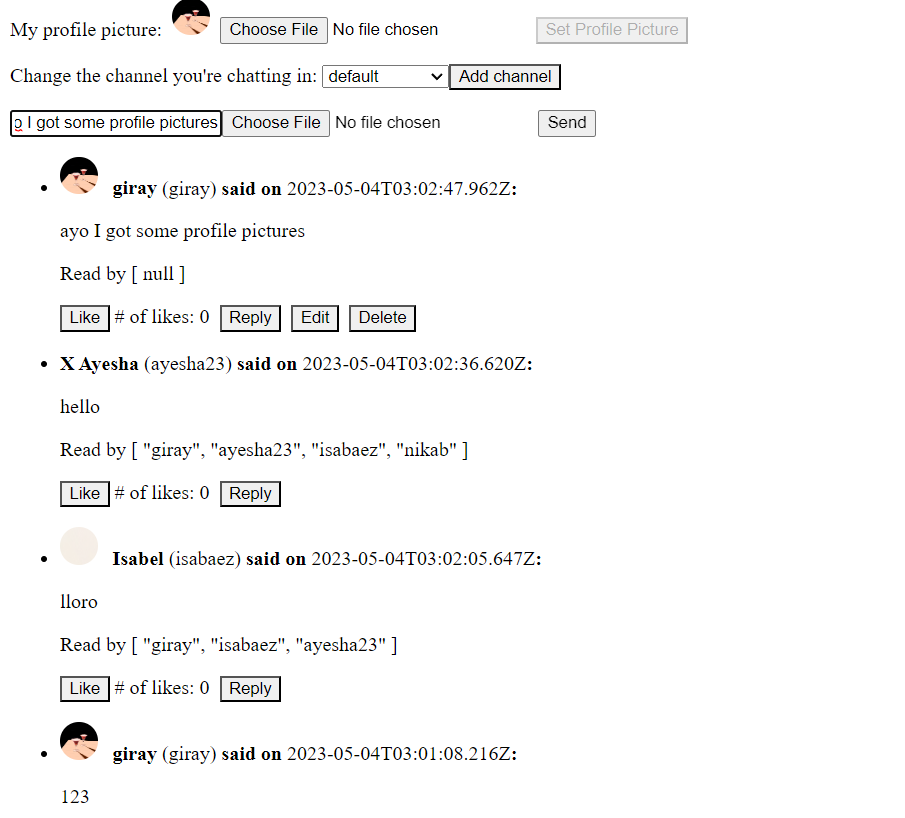
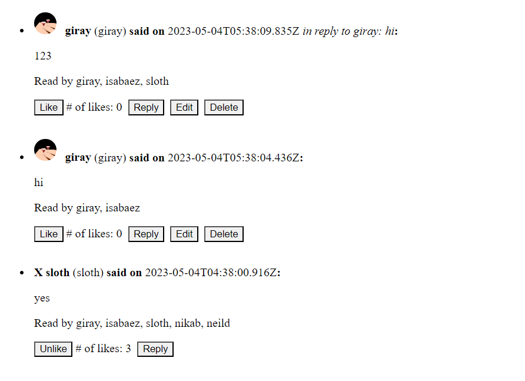

Adding read, reply, profile to the chat app
Here's a screenshot where I get the reads and the profile pictures.

Here's a reference screenshot for the below three designs:

Read receipts
Read receipts are very similar to the like objects, except that the read message is sent on
created() instead of on a click. With every message, a list of usernames that read the message
are displayed to everyone. See the reference screenshot for demonstration.
Replies
Replies get sent to the channel. To make this change, we set the context to the channel instead of the
message id. We add the username and content from inReplyTo at the end of the header for the
reply message. See the reference screenshot for demonstration.
Profile pictures
We added a section at the top like the one that changes the username to change the profile pictures. We made
it editable similar to how name is editable. We used the functionality from the image upload to upload
images and set them as profile pictures. For every message, we display the profile picture in the beginning
of the header. If there is no profile picture, we display 'X'. If there is a profile picture but it can't be
downloaded, we display 'Fail'. See the reference screenshot for demonstration.